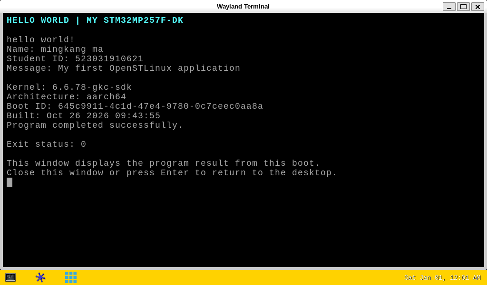

STM32MP257F-DK · X86_64 UBUNTU · 离线实验包
Hello World：修改、编译、屏幕显示、开机显示
适合：前面的刷机和内核实验已完成，板卡桌面正常；组员已有 x86_64 Ubuntu 22.04 / 24.04，尚未安装 SDK。板卡为 STM32MP257F-DK，系统基线为 OpenSTLinux v25.06.11。Ubuntu 留出至少 10 GiB 空间。
只做下面五步。不需要重新刷机、编译内核或完成 WEEK6。 首次安装 SDK 后，改名字只需重做第 2–4 步。
1解压，离线安装 SDK（只做一次）
将压缩包解压，得到 hello-lab 文件夹。在 Ubuntu 文件管理器打开它，右键“在终端打开”，执行：
安装器询问是否继续时输入 Y。看到 SDK ready 即可。SDK 装入 Ubuntu 的 ~/hello-lab-sdk，不用另找下载链接，也不需要安装完整内核源码。
Windows 的 WSL 可在 Ubuntu 中用 cd "/mnt/c/Users/WIN_USER/Downloads/hello-lab" 进入目录，将 WIN_USER 换成 Windows 用户名；虚拟机使用已有共享目录。安装和编译必须在 Ubuntu 内执行。此包面向 x86_64 Ubuntu；Apple Silicon 上的 ARM64 Ubuntu 需要另一份 ARM SDK，不能使用此包。
2改成自己的代码
用文本编辑器打开 src/hello_world.c（WSL 用户可直接在 Windows 文件夹中编辑），只改开头这三行双引号中的内容，保存为 UTF-8：
#define STUDENT_NAME "mingkang ma"
#define STUDENT_ID "523031910621"
#define MY_MESSAGE "My first OpenSTLinux application"
姓名建议写拼音，学号保留双引号。不要删行末或引号外的代码。文件就是自己要提交的 C 源码；src/Makefile 是配套编译文件。
3在 Ubuntu 编译
回到刚才的 Ubuntu 终端：
应看到 aarch64-ostl-linux-gcc、Machine: AArch64 和 Build succeeded。脚本会加载 SDK，并实际执行 make clean all。结果在 output/hello-lab-deploy.tar.gz；编译记录在 output/build.log。
4传到板卡，立即显示
板卡保持供电、HDMI 和触摸线连接；CN15 数据线连接你的宿主电脑。将刚生成的 hello-lab-deploy.tar.gz 复制到宿主的“下载”目录。
打开 Windows PowerShell 或 macOS 终端，先进入下载目录：
| Windows PowerShell | macOS 终端 |
|---|
cd "$HOME\Downloads" | cd "$HOME/Downloads" |
随后两种宿主都执行：
scp -O hello-lab-deploy.tar.gz root@192.168.7.1:/home/root/
ssh root@192.168.7.1
首次连接核对板卡指纹后输入 yes；本组现有镜像 root 密码为空。登录后，在 板卡终端执行：
cd /home/root
tar -xzf hello-lab-deploy.tar.gz
sh hello-lab-deploy/install-board.sh
等待约 15 秒，屏幕应出现终端窗口，显示 hello world!、自己的姓名、学号、留言，以及 Exit status: 0。窗口会保留，方便拍照；按 Enter 或关闭窗口可回到桌面。若解压提示文件时间在未来，是板卡时钟未校准；以随后各项校验均为 OK、运行退出状态为 0 判断成功。
5开机后自动显示
仍在 板卡终端执行：
systemctl enable hello-lab.service hello-lab-screen.service
reboot
等待约 1 分钟，应自动弹出同样的窗口，无需再次 SSH 或输入命令。先出现 ST 演示菜单是正常的，脚本会在桌面就绪后再等 12 秒打开结果。程序由 hello-lab 服务运行一次，屏幕服务保留显示本次结果。
中期验收“上电”时，再做一次真实断电：先 SSH 执行 poweroff，安全关机后断开所有供电，确认灯熄灭，等待约 5 秒再接回。不要先手动运行程序或重启服务，直接查看屏幕；需要日志时执行：
journalctl -b -u hello-lab --no-pager -o cat
systemctl show hello-lab -p Result -p ExecMainStatus
看到自己的身份信息、Result=success、ExecMainStatus=0。屏幕中的 Boot ID 应随重启改变。保存源码、Makefile、output/build.log 和屏幕照片；本组实测截图见包内 images 文件夹及 HTML 指导末尾。
常用操作： 改名后重新执行第 3–4 步；已启用的开机显示设置会保留。只想重新打开窗口，在板卡执行 systemctl restart hello-lab-screen。取消开机显示：systemctl disable --now hello-lab-screen.service hello-lab.service。
若出错： SDK 安装失败先看 output/sdk-install.log；编译失败看 output/build.log。SSH 不通先查 CN15 数据线和 USB 网卡。桌面正常但没有窗口时，在板卡执行 journalctl -b -u hello-lab-screen --no-pager -n 30。这份包是 x86_64 Ubuntu 用的，不能在 ARM64 Ubuntu 上安装。
实际断电上电后的屏幕
2026-10-26，STM32MP257F-DK，内核 6.6.78-gkc-sdk。恢复供电后自动打开此窗口；取图前未手动运行程序或重启服务。

程序成功退出（Exit status: 0），窗口保留显示本次启动的结果。查看软件重启截图 · 查看断电上电验证日志 · 查看验证范围